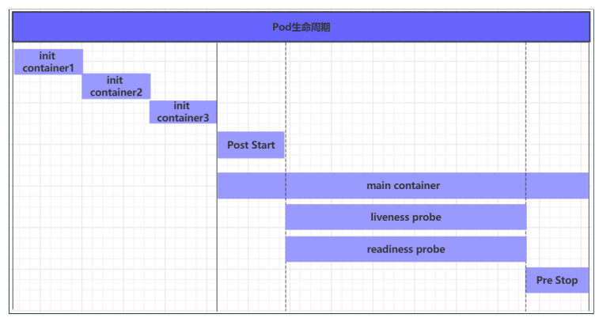
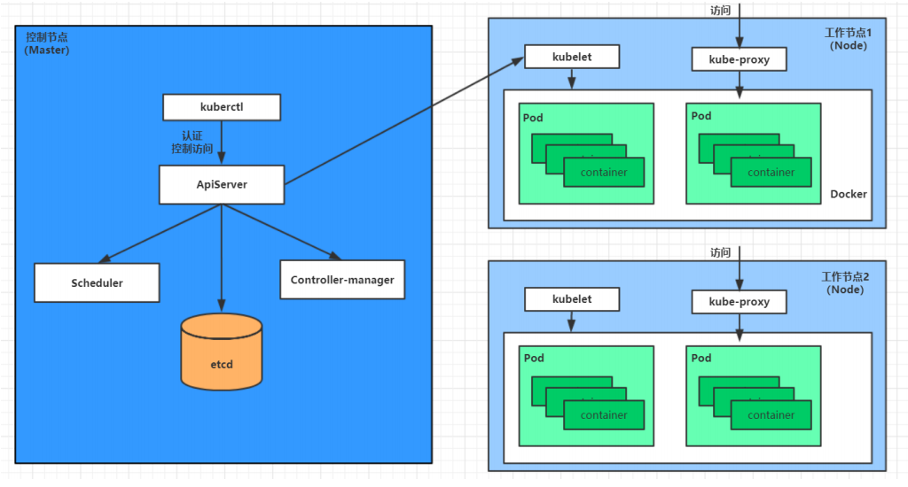

12.Pod详解
Pod 详解
Pod 生命周期
pod 的生命周期：Pod对象从创建到终止的这段时间范围。包括：
Pod 的创建过程
运行初始化容器（init container）过程
运行主容器
容器启动后钩子（post start），容器终止前钩子（pre stop）
容器的存活性探测（liveness probe），就绪性探测（readiness probe）
pod 终止过程

Pod 的5种状态
挂起（Pending）：apiserver 已经创建了 pod 资源对象，但它尚未被调度完成或者仍处于下载镜像的过程中
运行中（Running）：pod 已经被调度至某节点，并且所有容器都已经被 kubelet 创建完成
成功（Succeeded）：pod 中的所有容器都已经成功终止并且不会被重启
失败（Failed）：所有容器都已经终止，但至少有一个容器终止失败，即容器返回了非 0 值的退出状态
未知（Unknown）：apiserver 无法正常获取到 pod 对象的状态信息，通常由网络通信失败所导致
创建和终止
Pod 的创建过程
用户通过 kubectl 或其他 api 客户端提交需要创建的 pod 信息给 apiServer
apiServer 开始生成 pod 对象的信息，并将信息存入 etcd，然后返回确认信息至客户端
apiServer 开始反映 etcd 中的 pod 对象的变化，其它组件使用 watch 机制来跟踪检查 apiServer上的变动
scheduler 发现有新的 pod 对象要创建，开始为 Pod 分配主机并将结果信息更新至 apiServer
node 节点上的 kubelet 发现有 pod 调度过来，尝试调用 docker 启动容器，并将结果回送至apiServer
apiServer 将接收到的 pod 状态信息存入 etcd 中

Pod 的终止过程
用户向 apiServer 发送删除 pod 对象的命令
apiServcer 中的 pod 对象信息会随着时间的推移而更新，在宽限期内（默认30s），pod被视为dead
将pod标记为terminating状态
kubelet 在监控到 pod 对象转为 terminating 状态的同时启动 pod关闭过程
端点控制器监控到 pod 对象的关闭行为时将其从所有匹配到此端点的 service 资源的端点列表中移除
如果当前pod对象定义了 preStop 钩子处理器，则在其标记为 terminating 后即会以同步的方式启动执行
pod 对象中的容器进程收到停止信号
宽限期结束后，若 pod 中还存在仍在运行的进程，那么pod对象会收到立即终止的信号
kubelet 请求 apiServer 将此 pod 资源的宽限期设置为 0 从而完成删除操作，此时 pod 对于用户已不可见
初始化容器
初始化容器是在 pod 的主容器启动之前要运行的容器，主要是做一些主容器的前置工作
若某初始化容器运行失败，那么kubernetes需要重启它直到成功完成
初始化容器必须按照定义的顺序执行
应用场景
提供主容器镜像中不具备的工具程序或自定义代码
初始化容器要先于应用容器串行启动并运行完成，因此可用于延后应用容器的启动直至其依赖的条件得到满足
比如 假设要以主容器来运行nginx，但是要求在运行nginx之前先要能够连接上 mysql 和 redis 所在服务器
1 | apiVersion: v1 |
钩子函数
钩子函数能够感知自身生命周期中的事件，并在相应的时刻到来时运行用户指定的程序代码。
kubernetes 在主容器的启动之后和停止之前提供了两个钩子函数：
post start：容器创建之后执行，如果失败了会重启容器
pre stop ：容器终止之前执行，执行完成之后容器将成功终止，在其完成之前会阻塞删除容器的操作
钩子处理器支持三种方式定义动作
- Exec 命令：容器内执行一次命令
1 | lifecycle: |
- TCPSocket：在当前容器尝试访问指定的socket
1 | lifecycle: |
- HTTPGet：在当前容器中向某url发起http请求
1 | lifecycle: |
容器探测
容器探测用于检测容器中的应用实例是否正常工作，是保障业务可用性的一种传统机制。如果经过探测，实例的状态不符合预期，那么kubernetes就会把该问题实例" 摘除 "，不承担业务流量。
kubernetes 提供了两种探针来实现容器探测，分别是：
liveness probes：存活性探针，用于检测应用实例当前是否处于正常运行状态，如果不是，k8s会重启容器
readiness probes：就绪性探针，用于检测应用实例当前是否可以接收请求，如果不能，k8s不会转发流量
两种探针均使用三种探测方式
- Exec
命令：在容器内执行一次命令，如果命令执行的退出码为0，则认为程序正常，否则不正常
1
2
3
4
5livenessProbe:
exec:
command:
- cat
- /tmp/healthy - TCPSocket：将会尝试访问一个用户容器的端口，如果能够建立这条连接，则认为程序正常，否则不正常
1
2
3livenessProbe:
tcpSocket:
port: 8080 - HTTPGet：调用容器内Web应用的URL，如果返回的状态码在200和399之间，则认为程序正常，否则不正常
1
2
3
4
5
6livenessProbe:
httpGet:
path: / #URI地址
port: 80 #端口号
host: 127.0.0.1 #主机地址
scheme: HTTP #支持的协议，http或者https
还有一些配置可以用
1 | [root@master ~]# kubectl explain pod.spec.containers.livenessProbe |
重启策略
一旦容器探测出现了问题，kubernetes 就会对容器所在的 Pod 进行重启，其实这是由 pod 的重启策略决定的，pod 的重启策略有 3 种，分别如下：
Always：容器失效时，自动重启该容器，这也是默认值。
OnFailure： 容器终止运行且退出码不为0时重启
Never： 不论状态为何，都不重启该容器
重启策略适用于pod对象中的所有容器，首次需要重启的容器，将在其需要时立即进行重启，随后再次需要重启的操作将由 kubelet 延迟一段时间后进行，且反复的重启操作的延迟时长以此为10s、20s、40s、80s、160s和300s，300s是最大延迟时长。
1 | apiVersion: v1 |
Pod 调度
在默认情况下，一个 Pod 在哪个 Node 节点上运行，是由 Scheduler 组件采用相应的算法计算出来的，这个过程是不受人工控制的。
但是可以控制调度，有四种方法
自动调度：运行在哪个节点上完全由Scheduler经过一系列的算法计算得出
定向调度：NodeName、NodeSelector
亲和性调度：NodeAffinity、PodAffinity、PodAntiAffinity
污点（容忍）调度：Taints、Toleration
定向调度
定向调度，指的是利用在 pod 上声明 nodeName 或者 nodeSelector，以此将Pod调度到期望的node节点上。注意，这里的调度是强制的，这就意味着即使要调度的目标 Node 不存在，也会向上面进行调度，只不过 pod 运行失败而已
NodeName
NodeName 用于强制约束将 Pod 调度到指定的 Name 的 Node 节点上。这种方式，其实是直接跳过 Scheduler 的调度逻辑，直接将 Pod 调度到指定名称的节点
1 | apiVersion: v1 |
NodeSelector
NodeSelector 用于将 pod 调度到添加了指定标签的 node 节点上。它是通过 kubernetes 的 label-selector 机制实现的，也就是说，在 pod 创建之前，会由 scheduler 使用 MatchNodeSelector 调度策略进行 label 匹配，找出目标 node，然后将 pod 调度到目标节点，该匹配规则是强制约束。
1 | apiVersion: v1 |
亲和性调度
kubernetes还提供了一种亲和性调度（Affinity）。它在NodeSelector的基础之上的进行了扩展，可以通过配置的形式，实现优先选择满足条件的 Node 进行调度，如果没有，也可以调度到不满足条件的节点上，使调度更加灵活。
nodeAffinity（node亲和性）: 以node为目标，解决 pod 可以调度到哪些node的问题
podAffinity（pod亲和性） : 以pod为目标，解决 pod 可以和哪些已存在的 pod 部署在同一个拓扑域中的问题
podAntiAffinity（pod反亲和性）: 以pod为目标，解决 pod 不能和哪些已存在 pod 部署在同一个拓扑域中的问题
应用场景
亲和性：如果两个应用频繁交互，那就有必要利用亲和性让两个应用的尽可能的靠近，这样可以减少因网络通信而带来的性能损耗。
反亲和性：当应用的采用多副本部署时，有必要采用反亲和性让各个应用实例打散分布在各个 node 上，这样可以提高服务的高可用性。
三种亲和性配置都类似，不做赘述。 1
2
3
4
5
6
7
8
9
10
11
12
13
14
15
16
17
18
19
20
21
22
23
24
25pod.spec.affinity.podAffinity
requiredDuringSchedulingIgnoredDuringExecution 硬限制
namespaces 指定参照pod的namespace
topologyKey 指定调度作用域
labelSelector 标签选择器
matchExpressions 按节点标签列出的节点选择器要求列表(推荐)
key 键
values 值
operator 关系符 支持In, NotIn, Exists, DoesNotExist.
matchLabels 指多个matchExpressions映射的内容
preferredDuringSchedulingIgnoredDuringExecution 软限制
podAffinityTerm 选项
namespaces
topologyKey
labelSelector
matchExpressions
key 键
values 值
operator
matchLabels
weight 倾向权重，在范围1-100
topologyKey用于指定调度时作用域,例如:
如果指定为kubernetes.io/hostname，那就是以Node节点为区分范围
如果指定为beta.kubernetes.io/os,则以Node节点的操作系统类型来区分
污点和容忍
污点
我们也可以站在 Node 的角度上，通过在 Node 上添加污点属性，来决定是否允许Pod调度过来。
Node被设置上污点之后就和 Pod 之间存在了一种相斥的关系，进而拒绝 Pod 调度进来，甚至可以将已经存在的Pod驱逐出去。
污点的格式为： key=value:effect，key 和 value
是污点的标签，effect描述污点的作用，支持如下三个选项：
PreferNoSchedule：kubernetes 将尽量避免把 Pod 调度到具有该污点的 Node 上，除非没有其他节点可调度
NoSchedule：kubernetes 将不会把 Pod 调度到具有该污点的 Node 上，但不会影响当前Node上已存在的Pod
NoExecute：kubernetes 将不会把 Pod 调度到具有该污点的 Node 上，同时也会将Node上已存在的Pod驱离
1 | # 设置污点 |
容忍
如果就是想将一个 pod 调度到一个有污点的node上去，这时候应该怎么做呢？这就要使用到容忍
1 | apiVersion: v1 |